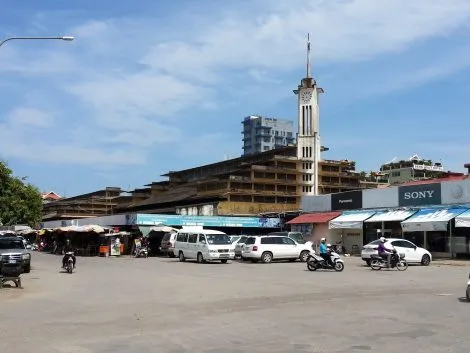
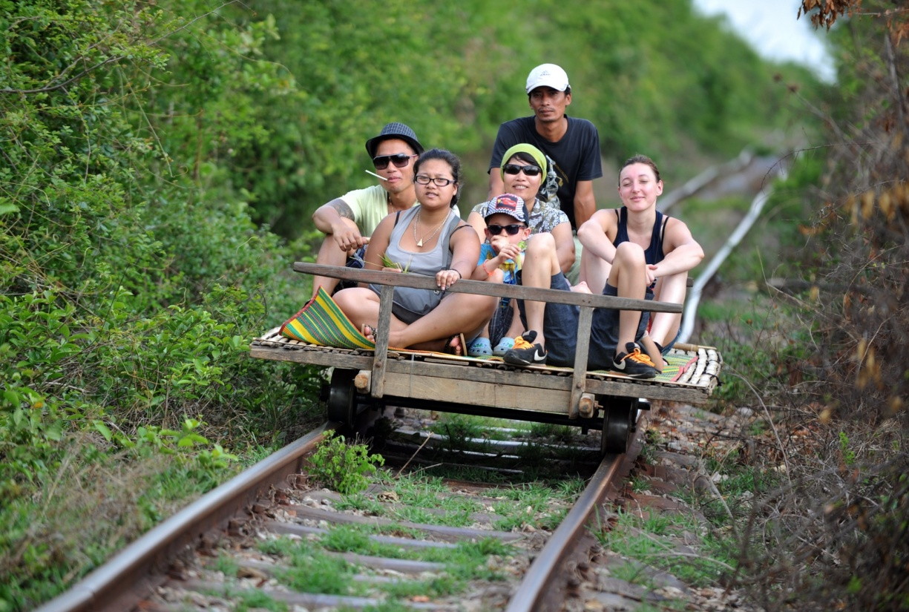
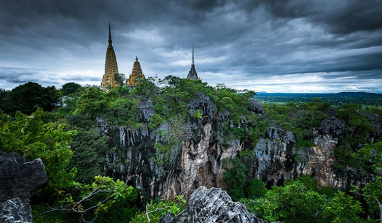

Here are some of the popular things to see and do in Battambang province:

Psaar Nat (Central Market): is the largest market in Battambang and is a great place to find souvenirs, such as clothing, silk scarves, and handicrafts.

Bamboo Train: is a homemade railway carriage that you can ride the bamboo train through the countryside and enjoy the scenery.Wat Banan: is a Hindu temple that is located on a hilltop. The climb to the temple is a bit challenging, although you can enjoy increedible view.

Phnom Sompeau: Phnom Sampov is a home to a large bat colony, where you can watch as thousands of bats take flight from the cave.